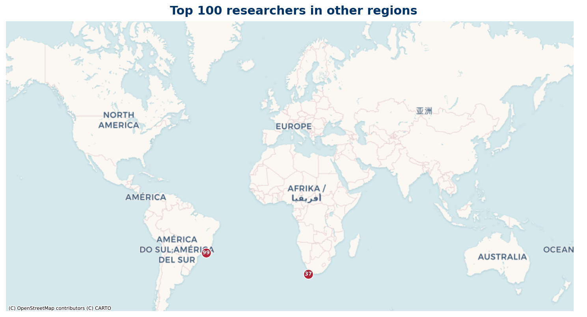

Other regions
Top 100 researchers based in Other regions
2 Top 100 researchers are based outside the three named regions.

Listing
| Rank | Name | Institution | Country |
|---|---|---|---|
| 37 | Florian Luca | Stellenbosch University | ZA |
| 99 | Emanuel Carneiro | Instituto Nacional de Matemática Pura e Aplicada | BR |